从北京到云南路途遥远，飞过去是最佳选择。虽说可以直飞大理，但我选择先飞昆明，坐高铁去大理。一来航班选择空间大，二来可以有更多的体验。
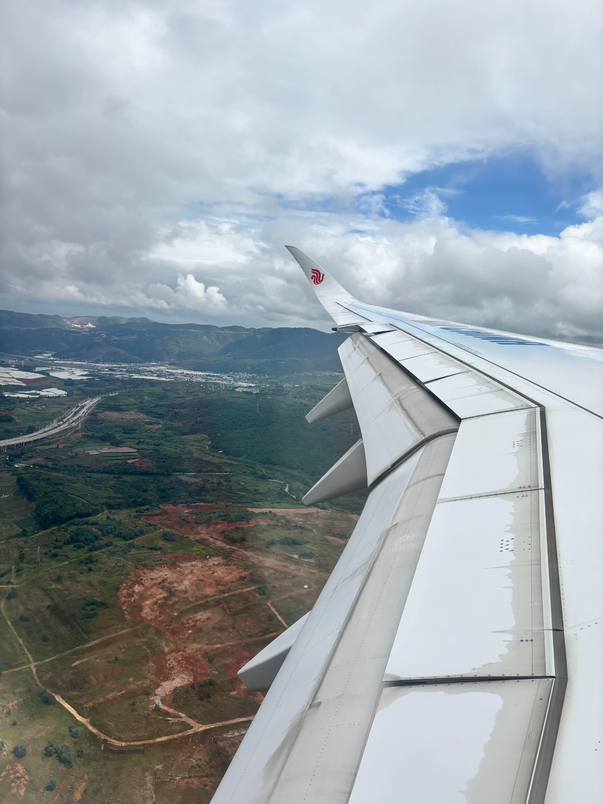
27 号中午飞临昆明上空，窗外美如画，随着下降高度越来越低，可以看到土壤的颜色是红褐色，心里一阵暖意升起。
落地后，往提取行李处走的路上偶遇凤凰卫视记者胡玲。
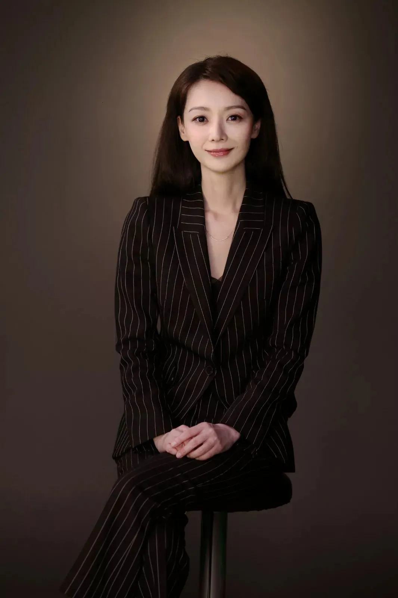
随后乘坐机场大巴直达昆明南站，然后搭乘高铁去大理。
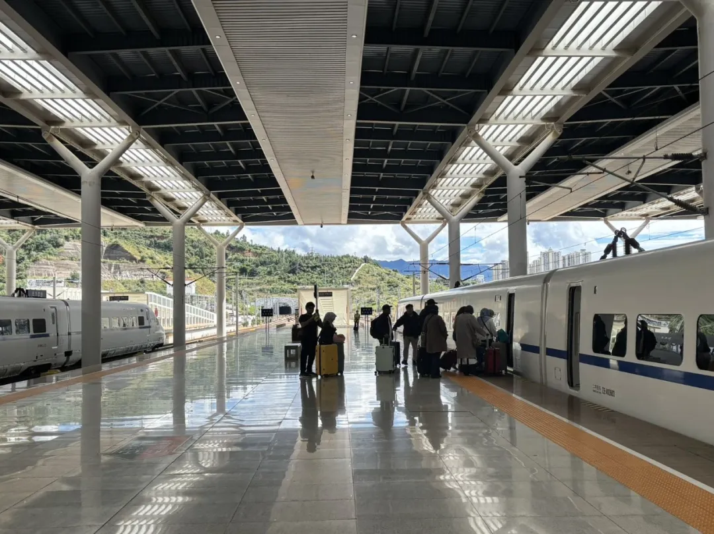
也许是国庆假期还没有开始，我所在的车厢没几个人，好像给我开了一趟专列似的。大理的一切对我来说都是未知的。探索「新大陆」，出发吧。
高铁两个半小时的车程时间里，只做了一件事，看着窗外的一切慢慢地发呆。

这样湛蓝的天空，印象中只有小时候才看到过，北京虽然在 2015 年后，空气质量有了很大的改善，但是即便最好的天气里，天空也不曾像这样湛蓝。
一路上不知道经过了多少个隧道，看见了蓝天、看见了白云、看见了乡村小道、山头、桥梁、植被茂密的树林等等，也看见了自己。
下午5点多，列车缓缓开进了大理站。
第二天(28号)准备徒步苍山玉带路，下午去洱海边才村码头附近看海溜达。
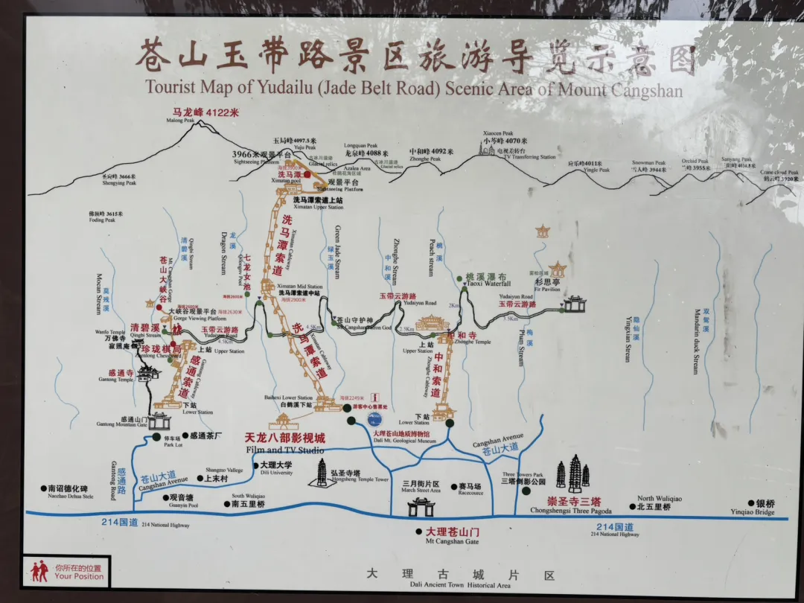
苍山共有三条索道
感通索道，起点在感通寺附近。可抵达清碧溪、苍山大峡谷，沿途自然风光秀丽。
洗马潭索道，起点在天龙八部影视城附近，贯穿苍山山腰至山顶。是苍山最长、落差最大的索道，可直达海拔约3920米的洗马潭景区，欣赏高山湖泊和杜鹃花海。
中和索道，起点在大理古城西侧附近。露天式吊篮索道，直达中和寺，适合轻松游览，俯瞰洱海和大理古城全景。
玉带路这个名字起的真好，字面意思一条白色或黄色的玉带挂在苍山半山腰上，从左到右共计 11.5KM 徒步路线。
我的计划是乘坐感通索道上去，徒步玉带路，最后乘坐中和索道下山。
来之前，我已了解到，起点附近有一个寺庙：寂照庵，修建于明朝，这次正好去拜访一下。
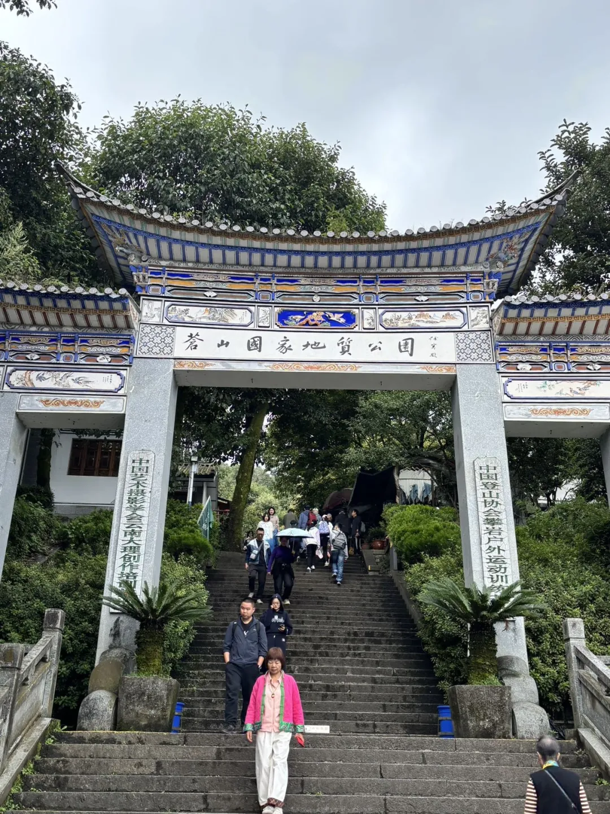
买了苍山门票和索道票后，我从工作人员处了解到感通原来指的是感通寺。索性两个地方一起逛完，再坐索道上山。
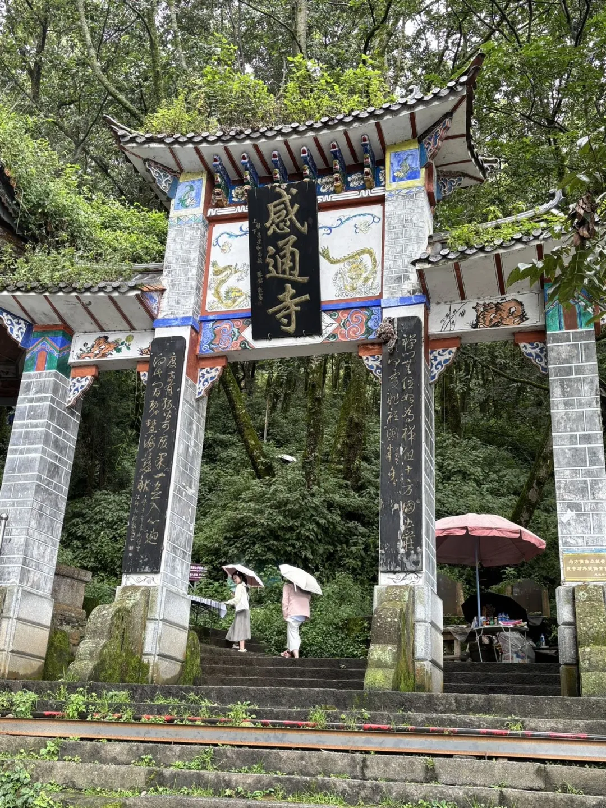
从寺庙门口牌子的介绍中得知，明朝大才子杨慎(三国演义主题曲的词出自他写的诗-临江仙)被贬云南后，来这里游历讲学过，顿生敬畏。跨越几百年时间，我们在不同的时间来到同一个地方。
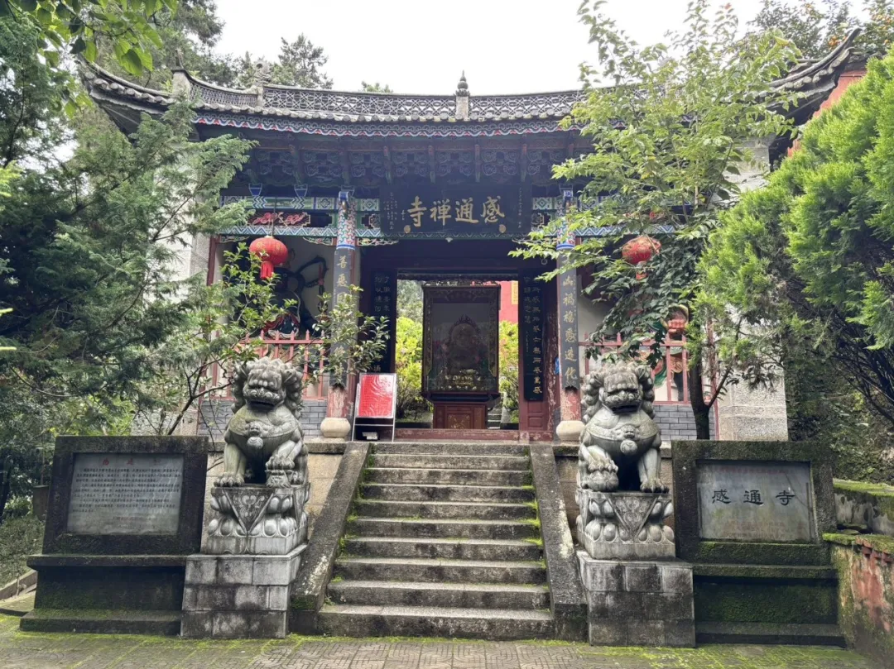
临近午饭时间来到了寂照庵，一座始建于明初的尼姑庵。以花敬佛，不烧香火。寂照庵用鲜花代替香火供奉佛祖。庵内无处不点缀着种类繁多、造型别致的多肉植物和鲜花。
中午还提供素斋，吃饭的人特别多。
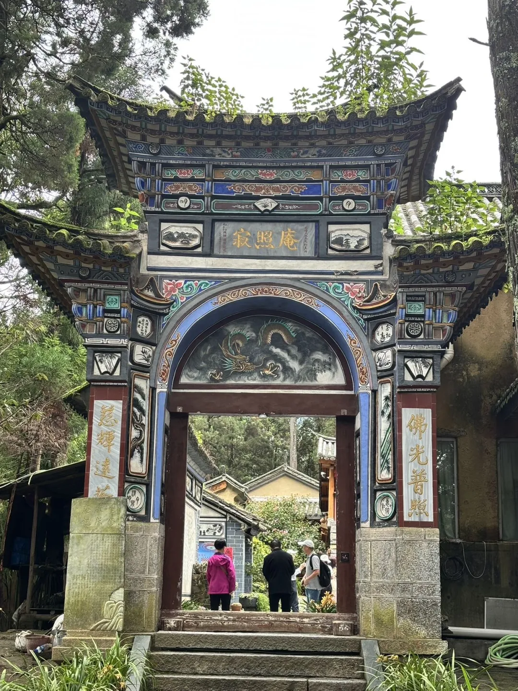
离开这里，前往感通索道乘坐处上山。
随着索道高度的上升，洱海及海西尽收眼底。下方则是苍山地质公园成片的原始森林。
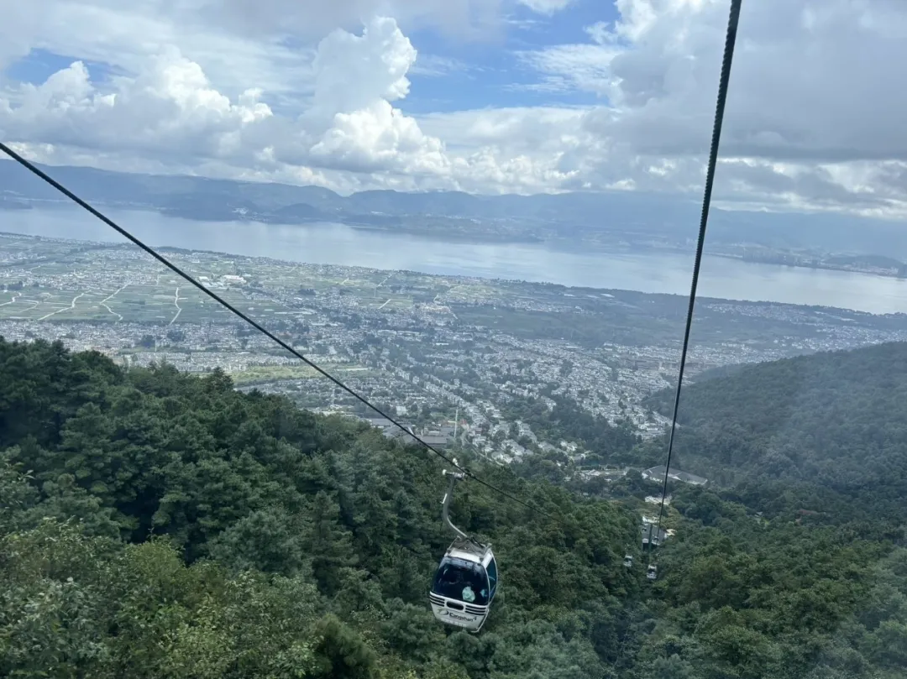
途中路过玲珑棋局，可俯视之。相当漂亮。
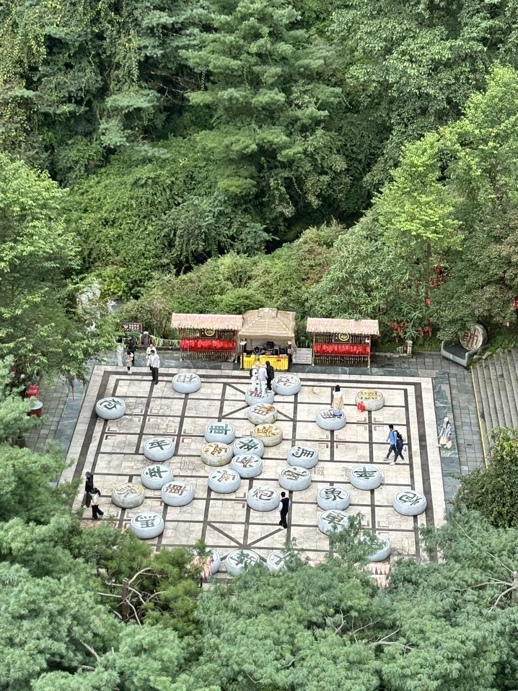
来到了本次徒步的起点
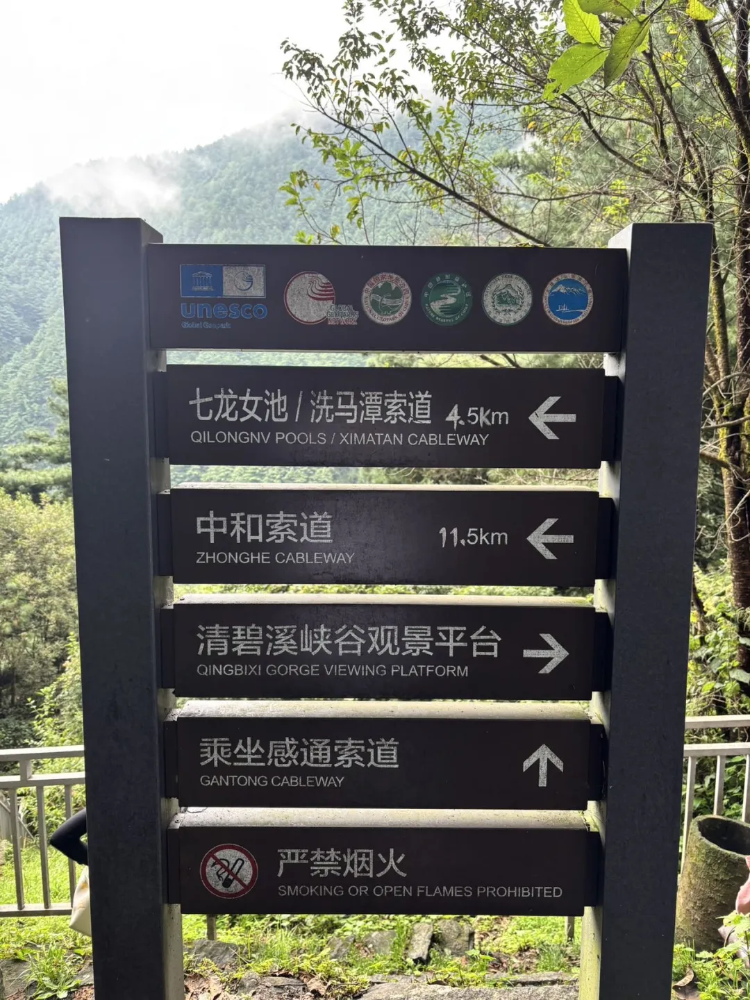
玉带路，一路都是平整的石板路，也适合休闲散步。刚开始走时偶遇一个学生团。苍山脚下、大理古城西边坐落着一所大学——大理大学。她们好像是那里的学生。
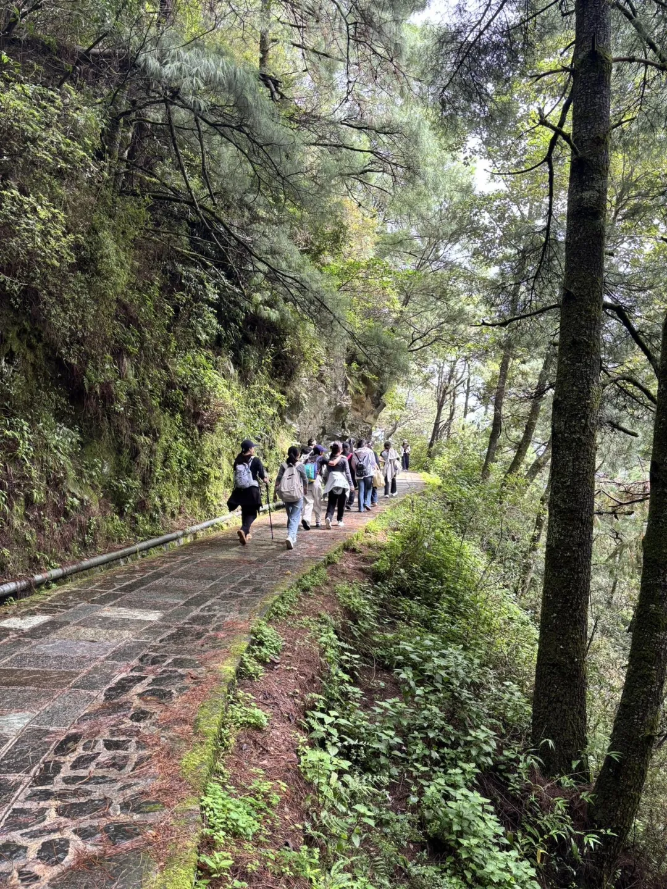
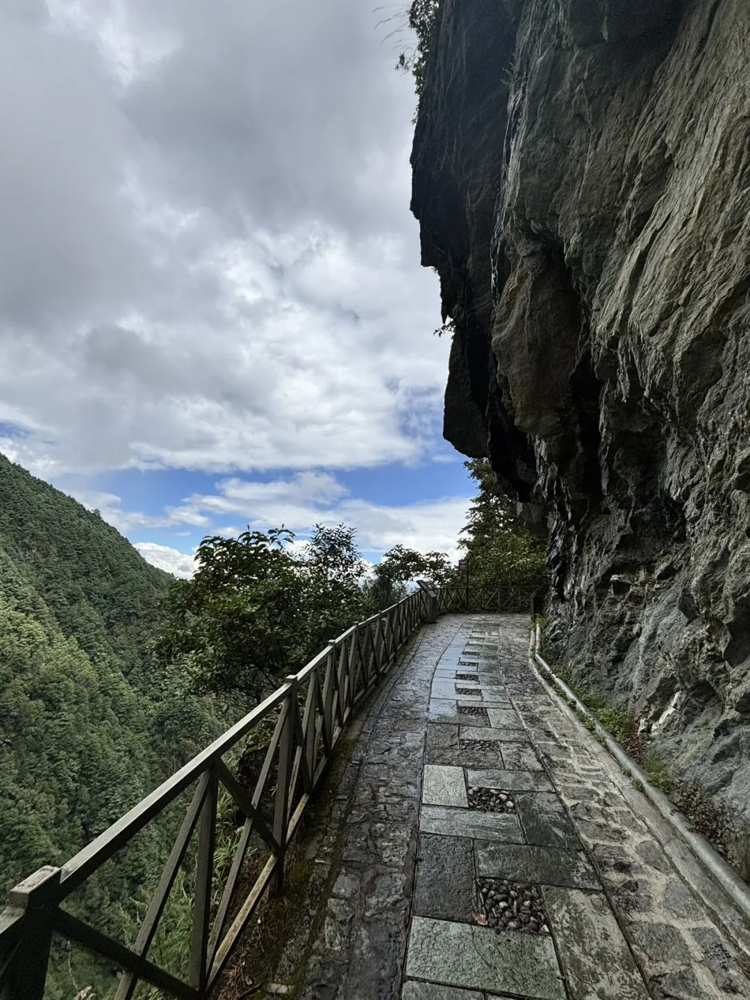
途中也有不少供游人休息的凉亭。走到后半程时，下起了朦胧细雨、小雨，再后来中雨，还好我带了雨伞、雨衣。
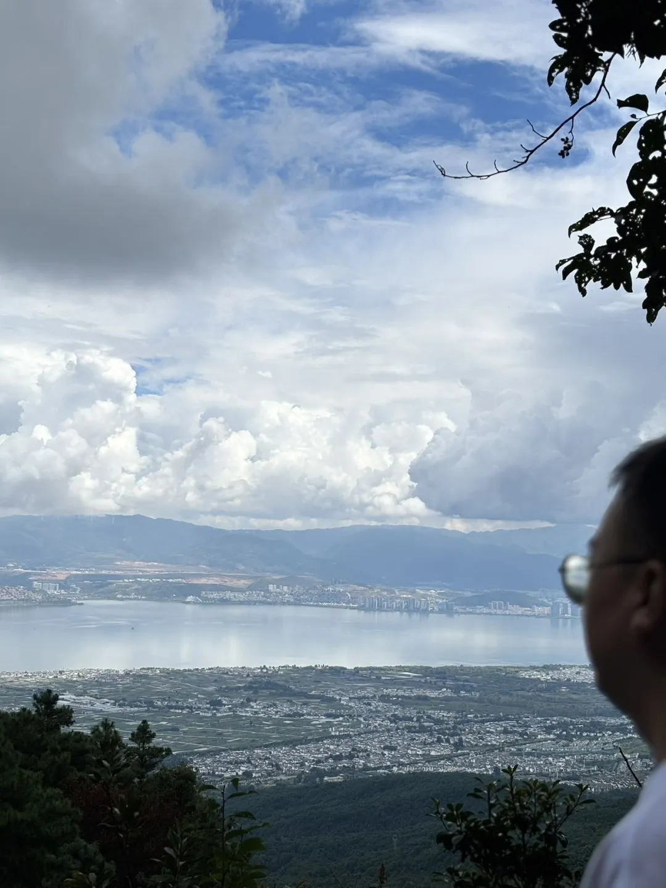
下午3 点多到达中和寺，进去简单溜达了一圈后，就来到了和中和寺挨着的一个二层建筑的茶馆，门前一大片开阔地，非常适合拍照观赏洱海景观。
茶馆下方是一个供游客休息的长廊，在这里收拾好随身携带的东西后，径直去中和索道售票处。和售票员一阵感叹徒步玉带路真好，售票小哥纯真的样子和我说，他们平时也经常走。
虽说来之前有做功课，了解中和索道是开放式的，但是坐上去后，不免有一点害怕和惶恐。不过没一会儿，这种感觉就没有了。
随之而来映入眼帘的是两边高大挺拔的原始树木，而脚下是顺着索道行进方向的一条空旷地带，前方远处湛蓝色的天空和白云，下边是洱海。
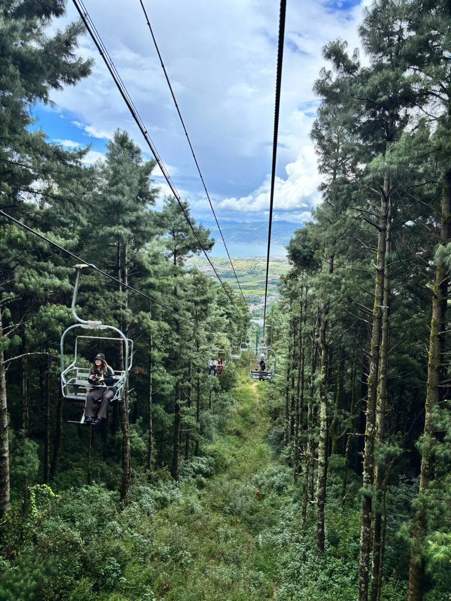
置身这样安静的环境中，一种宁静的感觉油然而生。我感觉自己太幸福了，这种感受好像是第一次体验到，完全意料之外。进一步说，宁静的感觉是内心充盈、全身舒畅、心怀敬畏和感恩于一体。
在大理入住的亚朵酒店，关于亚朵酒店，我多少了解一点。
当晚回到酒店入睡前，坐在窗边发了很久的呆。翻出了视频号【亚朵 ATOUR】，简介是这样说的。
亚朵，始于住宿的生活方式品牌
创始人于旅途中邂逅了滇缅边境的亚朵村
高山峡谷小村庄，民风淳朴有信仰
以此为名，开启了一段人文、温暖、有趣的旅程
Life is ATOUR，在亚朵，总有不期而遇的温暖
云南真的是放空灵魂的地方，能触动你的心的地方。
据我所知，亚朵创始人王海军创办亚朵酒店前，去了不丹、尼泊尔旅行，在那里，所见、所听、所闻让他深受感动。
那里的人们无论是大人还是小朋友精神充盈、生活快乐无忧无虑、待人真诚淳朴友善。所以他想，我们国内有没有这样的地方呢？
所以就有了上文所描述的，在怒江边上意外邂逅亚朵村 —— 高山峡谷小村庄，民风淳朴有信仰。
随后回去创立了亚朵酒店，从我多次入住的体验看，亚朵酒店践行了初心，把宁静真正带回到了城市生活中。